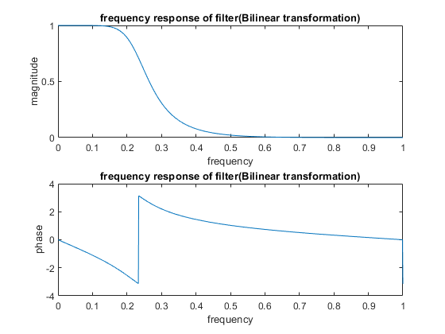
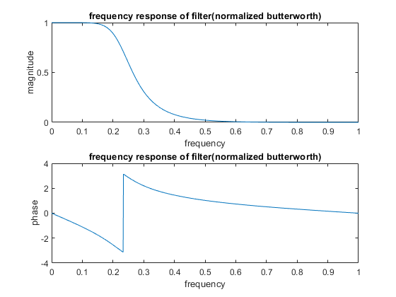
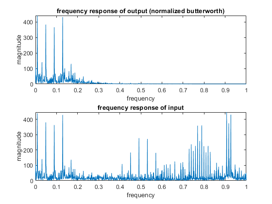

Contents
close all
clc
clear
part 1 Bilinear transformation
wp = 0.2*pi;
ws = 0.4*pi;
Rp = 1;
As = 20;
T = 2;
Fs = 1/T;
OmegaP = (2/T)*tan(wp/2);
OmegaS = (2/T)*tan(ws/2);
[b,a] = afd_butt(OmegaP,OmegaS,Rp,As);
[b1,a1] = bilinear(b,a,Fs);
disp('numerator coefficients of H(z) ')
disp(b1)
disp('denominator coefficients of H(z) ')
disp(a1)
[C,B,A] = dir2cas(b1,a1);
disp('coefficients in cascade form')
disp('C=')
disp(C)
disp('B=')
disp(B)
disp('A=')
disp(A)
[h11,w11]=freqz(b1,a1,0:pi/1000:pi);
figure()
subplot(2,1,1)
plot(w11/pi,(abs(h11)))
title('frequency response of filter(Bilinear transformation)')
xlabel('frequency')
ylabel('magnitude')
subplot(2,1,2)
plot(w11/pi,(angle(h11)))
title('frequency response of filter(Bilinear transformation)')
xlabel('frequency')
ylabel('phase')

part 2 Normalized Butterworth
N =ceil((log10((10^(Rp/10)-1)/(10^(As/10)-1)))/(2*log10(OmegaP/OmegaS)));
OmegaC = OmegaP/((10^(Rp/10)-1)^(1/(2*N)));
disp('N=')
disp(N)
disp('omegac=')
disp(OmegaC)
wn = 2*atan((OmegaC*T)/2);
wn = wn/pi;
[b2,a2]=butter(N,wn);
disp('numerator coefficients of H(z) ')
disp(b2)
disp('denominator coefficients of H(z) ')
disp(a2)
[h,w1]=freqz(b2,a2,0:pi/1000:pi);
figure()
subplot(2,1,1)
plot(w1/pi,abs(h))
title('frequency response of filter(normalized butterworth)')
xlabel('frequency')
ylabel('magnitude')
subplot(2,1,2)
plot(w1/pi,angle(h))
title('frequency response of filter(normalized butterworth)')
xlabel('frequency')
ylabel('phase')
N=
4
omegac=
0.3847
numerator coefficients of H(z)
0.0082 0.0327 0.0490 0.0327 0.0082
denominator coefficients of H(z)
1.0000 -2.0980 1.9098 -0.8203 0.1392

part 3 filtering
[x_m,fs_m] = audioread('HW3_Q2_multi_tone.wav');
[xmfreq,freq]=freqz(x_m,1,0:pi/1000:pi);
xmfilter1=filter(b1,a1,x_m);
xmfilter2=filter(b2,a2,x_m);
[h21,w21]=freqz(xmfilter1,1,0:pi/1000:pi);
[h22,w22]=freqz(xmfilter2,1,0:pi/1000:pi);
figure()
subplot(2,1,1)
plot(w21/pi,abs(h21))
title('frequency response of output(bilinear transformation)')
xlabel('frequency')
ylabel('magnitude')
subplot(2,1,2)
plot(freq/pi,abs(xmfreq))
title('frequency response of input')
xlabel('frequency')
ylabel('magnitude')
figure()
subplot(2,1,1)
plot(w22/pi,abs(h22))
title('frequency response of output (normalized butterworth)')
xlabel('frequency')
ylabel('magnitude')
subplot(2,1,2)
plot(freq/pi,abs(xmfreq))
title('frequency response of input')
xlabel('frequency')
ylabel('magnitude')


finding analog filter coefficients.
function [b,a] = afd_butt(Wp,Ws,Rp,As)
N = ceil((log10((10^(Rp/10)-1)/(10^(As/10)-1)))/(2*log10(Wp/Ws)));
Omegac=Wp/((10^(Rp/10)-1)^(1/(2*N)));
[z,p,k] = buttap(N);
p = p*Omegac;
k = k*Omegac^N;
B = real(poly(z));
b0 = k;
b = k*B;
a = real(poly(p));
end
numerator coefficients of H(z)
0.0082 0.0327 0.0490 0.0327 0.0082
denominator coefficients of H(z)
1.0000 -2.0980 1.9098 -0.8203 0.1392
dircect2cascade
function [C,B,A] = dir2cas(b,a)
Na = length(a)-1;
Nb = length(b)-1;
b0 = b(1); b = b/b0; a0 = a(1); a = a/a0; C = b0/a0;
p= cplxpair(roots(a)); K = floor(Na/2);
if K*2 == Na
A = zeros(K,3);
for n=1:2:Na
Arow = p(n:1:n+1,:); Arow = poly(Arow);
A(fix((n+1)/2),:) = real(Arow);
end
elseif Na == 1
A = [0 real(poly(p))];
else
A = zeros(K+1,3);
for n=1:2:2*K
Arow = p(n:1:n+1,:); Arow = poly(Arow);
A(fix((n+1)/2),:) = real(Arow);
end
A(K+1,:) = [0 real(poly(p(Na)))];
end
z = cplxpair(roots(b)); K = floor(Nb/2);
if Nb == 0
B = [0 0 poly(z)];
elseif K*2 == Nb
B = zeros(K,3);
for n=1:2:Nb
Brow = z(n:1:n+1,:); Brow = poly(Brow);
B(fix((n+1)/2),:) = real(Brow);
end
elseif Nb == 1
B = [0 real(poly(z))];
else
B = zeros(K+1,3);
for n=1:2:2*K
Brow = z(n:1:n+1,:); Brow = poly(Brow);
B(fix((n+1)/2),:) = real(Brow);
end
B(K+1,:) = [0 real(poly(z(Nb)))];
end
end
coefficients in cascade form
C=
0.0082
B=
1.0000 2.0000 1.0000
1.0000 2.0000 1.0000
A=
1.0000 -0.9167 0.2352
1.0000 -1.1813 0.5917